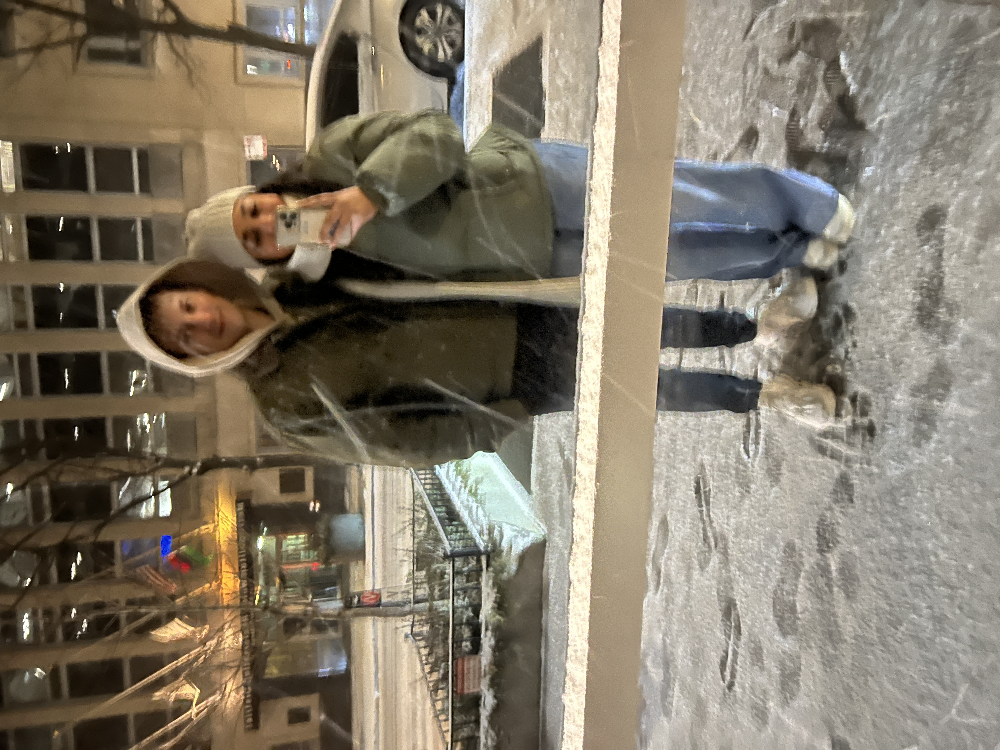
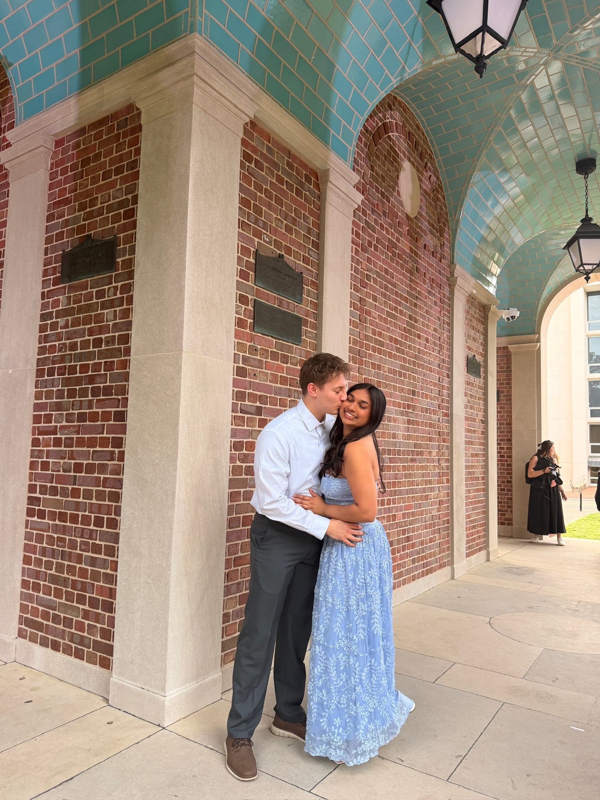
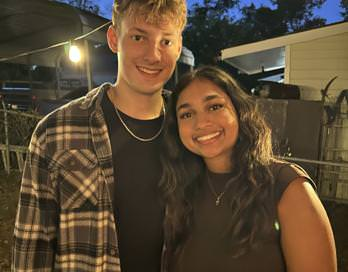

Us, in Time.
Every moment together becomes our story.
Food & Drink Reviews
Share what we felt when trying new places and dishes.
Our Favorite Songs
Melodies that always remind me of you
Landslide
Fleetwood Mac
Loving You On My Mind
Chris Stapleton
Rein Me In
Sam Fender & Olivia Dean
Our Story Timeline
From the simple "hi" to the meaningful "stay", this is our favorite timeline.
First Notification
It started with a short message that led to our first conversation. I wanted to plan a nice date that you would enjoy, so I picked the Downtown Cary Park for us to meet at. I was so excited and anticipating the day we would meet in person.
First Face-to-Face
My heart was racing the moment I first saw you walking down the steps at the library. I saw your smile in person for the first time, and I wanted to see it every day after. We walked around the park and grabbed a coffee by a nearby cafe. I knew from there that you were someone special.
Late Night Conversations
Our first facetime call. This would be the beginning of many late-night conversations that would strengthen our bond and overcome challenges with our situation. I was working night shift at the time, we had limited time to talk throughout the day, but still made it all work because we truly cared for each other.
We Began
No longer me and you, but us. The day we promised to care, understand, and walk together — a date that I will never forget. We went to Firebirds together, where I asked you to be my girlfriend. I remember being so nervous and excited at the same time that day, and it worked out better than I could ever imagine.
Growing Older Together
Blowing out candles next to you for the first time was such a blessing. My simple wish was that in the years to come, it's your face I see when I wake on my best and worst days.
First Adventure
Our first trip together, the beginning of many more adventures to come. I had so much fun travelling to Boone with you, and even though I had already lived there, being there with you made it feel like an entirely new place.
Everlasting Love
Our first Valentine's Day together that we celebrated at Epic Chophouse. It marked the beginning of a love that will last forever and only grow deeper with each passing year.
Chicago
We were able to visit Chicago together, and I had an unforgettable experience. We packed in so much within just a couple of days, and it was one of the most fun places I've ever been to, because I was able to experience it with you. From trying Chicago style pizza, to taking funny pictures at the bean, to visiting Naval pier, Museum of Ice Cream, Eataly, and just walking around the city with you - it was everything to me.
Graduation
Watching you walk down the stage with your diploma was such an incredible moment that I am proud to have witnessed. This marked the beginning of a new chapter in our lives that we would continue to write together. I am so proud of you for everything you have achieved so far, and I know that there is nothing in life that you cannot accomplish.
Our First Concert
We got to experience our first concert together with Flatland Cavalry. You also tried Sonic for the first time, so it was a pretty good day altogether.
Beautiful Moments



Every memory we make
is kept here,
forever
Thank you for being my everything. Every moment with you is a priceless gift.